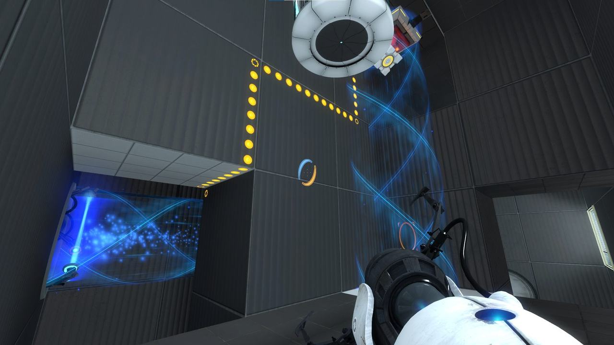
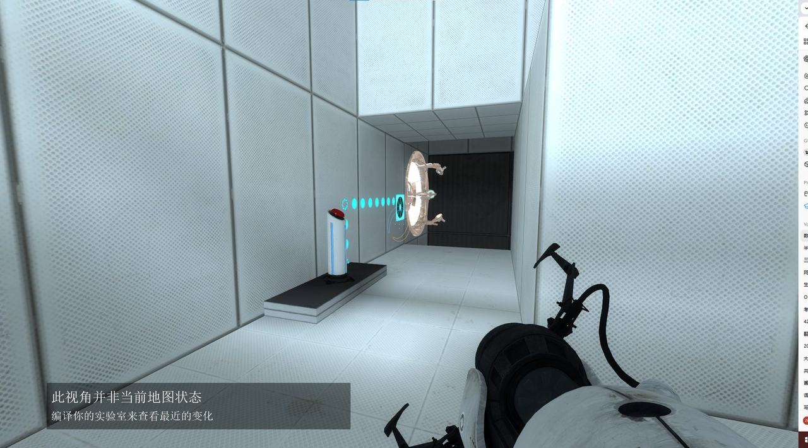
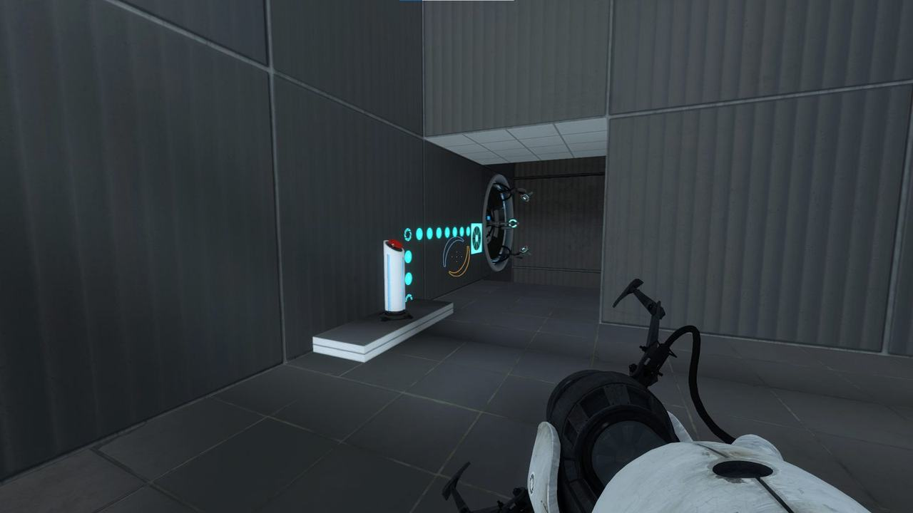
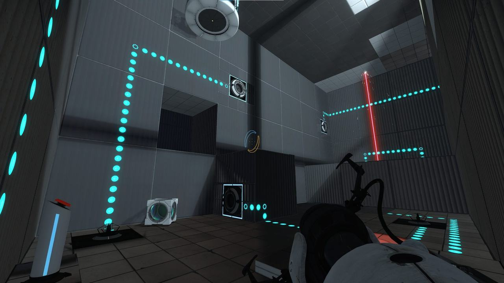
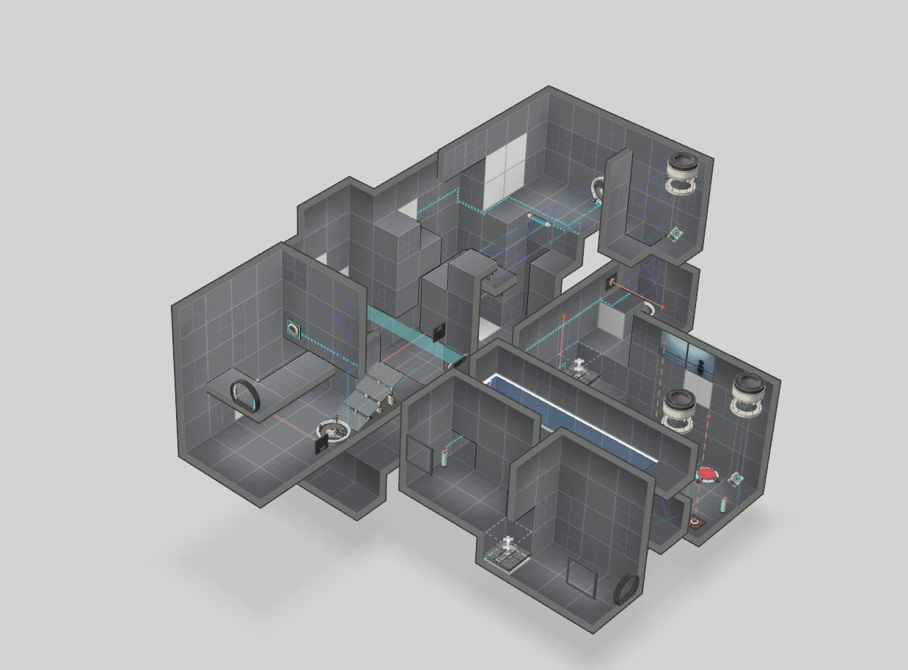
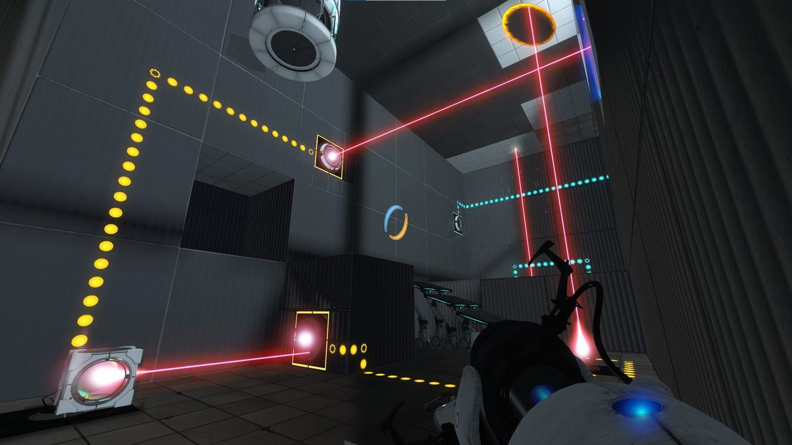
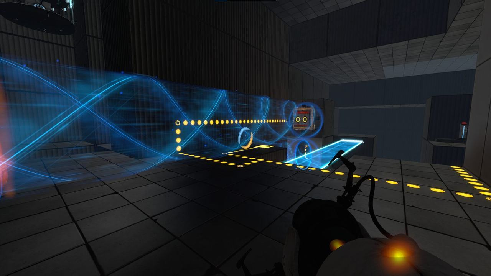
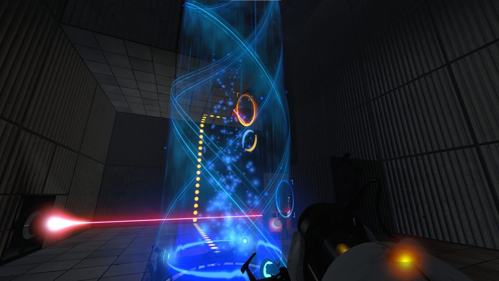

2026 · 项目
Portal 2 测试室「Interleave」
用传送漏斗与激光，做一间 A ⇒ B ⇒ AB ⇒ AB 的测试室
在 Portal 2 内置编辑器里设计并迭代一间四房间结构的解谜测试室。机制 A 是传送漏斗，机制 B 是激光与反射方块，第三、四间房把两者叠加成多步链式解谜。三轮迭代的核心教训是：没有环境约束，玩家一定会绕过你的谜题。
- 担任
- 关卡设计（单人）
- 团队
- 个人项目
- 周期
- 2026.03 – 2026.06
- 引擎 / 工具
- Portal 2 PeTI 测试室编辑器
- 类型
- 解谜关卡设计 · 测试室
- 状态
- 已发布到 Steam 创意工坊并提交作业

Overview
项目概述
这间测试室叫「Interleave」——名字来自它把两类机制交织在一起的方式。 设计要求很硬性：必须在四个房间里走完 A ⇒ B ⇒ AB ⇒ AB（更复杂） 的结构， 每个机制都要包含至少一个 Major Test Element，并且其中至少一个是传送漏斗或激光。 另外明确禁用炮塔、各种凝胶、死亡泥浆等元素。
面向的玩家不是社区里那些把 Portal 2 测试室玩到滚瓜烂熟的高手，而是一个 玩过主线、但对这间房的机制组合不熟悉的普通玩家。这一点决定了谜题的难度上限。
四房间结构
| 房间 | 目的 | 玩家做什么 |
|---|---|---|
| 1 | 引入机制 A：传送漏斗 | 看到一道跨不过去的物理缺口 → 踩地面按钮激活传送漏斗 → 乘坐漏斗安全越过缺口 |
| 2 | 引入机制 B：激光 | 把方块放上压力板启动激光 → 拿起反射方块，手动调整角度把光束导向接收器 → 阶梯升起 |
| 3 | 简单混合 A & B | 目标区域步行无法抵达 → 用传送枪把激光跨过缺口折射进接收器 → 解锁传送漏斗 |
| 4 | 复杂混合 A & B | 多步链：用传送门把方块放到压力板 → 轨道平台移动到指定位置 → 用传送门调整激光角度打开激光门 → 再把激光导向最终接收器 → 乘漏斗升上出口 |
Concept
概念设计
体验目标
我希望玩家在解谜的过程中思考空间：理解不同科技元素之间如何互相作用， 然后通过操控它们给自己清出一条路。
电梯陈述
这是一间以顺序与路由为核心的空间推理测试室。整体目的是先让玩家分别学会控制 "运动"（漏斗）与"能量"（激光），再挑战他们把两者组合起来——去操纵平台、打开门， 并最终为自己造出一条逃生路径。
主题与场所
经典的 Aperture Science 科幻美学：干净、无菌、高度结构化的实验室风格， 强调功能与测试，而不是装饰。关卡发生在地下测试设施内，是一串封闭连续的测试房间， 以白灰色面板、观察窗和深渊为主要视觉元素——深渊同时也强调了玩家必须跨越的物理缺口。
机制清单
- 主要机制：传送漏斗、激光（发射器 / 接收器 / 反射方块）
- 次要机制：方块、按钮（压力板）、平台（轨道平台）
- 我自认为比较有意思的用法：最后一间房里，玩家用传送门不只是移动自己， 而是建立一条多步连锁反应——触发按钮移动平台，平台移位后激光才能被路由到特定接收器， 而最终接收器又激活了通往出口的漏斗。
概念评审反馈
把激光和漏斗混在一起，很容易在视觉上变得非常混乱。
主要收获：在玩家必须混合使用两种机制之前，要先用玻璃面板把它们在视觉上清楚地分隔开。 这条建议直接影响了后面几个版本的房间构成方式。
Blockout → Final
三轮迭代
Blockout · 玩家直接绕过了谜题

我在 blockout 阶段专注搭建一串房间，让玩家需要用传送门和激光反射方块去激活接收器来推进。 我希望谜题包含一些垂直移动和空间思考，所以尝试了不同的平台高度与可传送表面， 鼓励玩家抬头观察环境。
反馈：最重要的意见是很多玩家能跳过大量谜题。 因为可传送表面太多、限制太少，玩家经常可以在完全不触达预期机制的情况下抵达出口—— 这说明谜题的约束强度不够。另一个问题是部分玩家不确定主要目标是什么， 房间里有些元素看起来是多余的，反而让谜题更不清晰。
正面的是：玩家普遍觉得激光重定向机制有意思，说明核心想法是有潜力的。 基于这轮反馈，下一版会聚焦提升谜题清晰度，并加入黑面板与 Emancipation Grill 之类的限制来阻止玩家绕过预期解法。
Beta · 加约束，但也变得重复


做了什么：针对"太多可传送表面"的问题，我加入了更多限制——不可传送表面、 调整布局以更好地把玩家导向预期解法，确保他们会按设计意图与激光机制交互。 此外引入了光桥机制，用来创造新的位移机会，为谜题再叠加一层。
反馈：玩家基本都能理解"用传送门重定向激光"这个核心机制，但有人觉得 谜题重复、缺少变化，并建议增加额外的解题步骤（比如使用反射方块）来提高复杂度。 另一个问题是部分谜题元素没有清楚地传达给玩家——说明需要更强的视觉引导， 比如 antline（游戏自带的指引线）或让接收器的视线更通透。
Gamma · 过度修正成了一条走廊

做了什么：在 Gamma 阶段，我的重心转向空间精修与机制整合。复盘早期 playtest 后， 我意识到布局太开放，玩家很容易失去对预期解谜逻辑的把握。于是我把房间重新设计得更线性、更有结构， 让玩家自然会沿着激光与光桥谜题的推进顺序走。
反馈：视觉呈现与机制执行都受到好评，但反馈指出了强烈的线性感。 测试者认为房间显得又小又窄，显著降低了主动思考的必要性——因为环境太封闭， 预期路径永远一目了然，导致缺少 Portal 2 关卡通常应有的"解谜"挑战感。
这一轮是典型的过度修正：我为了解决"迷路"把空间收紧，结果把"探索"一起挤掉了。
Final · 放大尺度，恢复探索




最终阶段的主要目标是解决 Gamma 测试暴露的"过于线性"与"难度过低"问题： 扩大第三、四房间的物理尺度，优化部分谜题以消除压迫感、增强探索体验， 同时给第一间房补充了一些机制来提高复杂度。
Takeaways
总结与反思
环境约束是谜题完整性的必要条件
这是我在这间测试室里学到的最重要的一件事：没有经过策略性布置的不可传送表面， 玩家就一定会绕过你的设计逻辑，机制设计因此贬值。 Blockout 阶段的"玩家能跳过大量谜题"，根因不在谜题本身，而在约束不足。
空间尺度需要平衡
Gamma 版本用窄走廊有效防止了困惑，但也同时限制住了"发现感"。 我意识到一间成功的关卡必须同时提供足够的探索空间和清晰的空间线索—— 这两者不是对立的，而是需要被同时设计进去。
引导不足会让玩家绕过谜题；约束过度会让谜题不再是谜题。